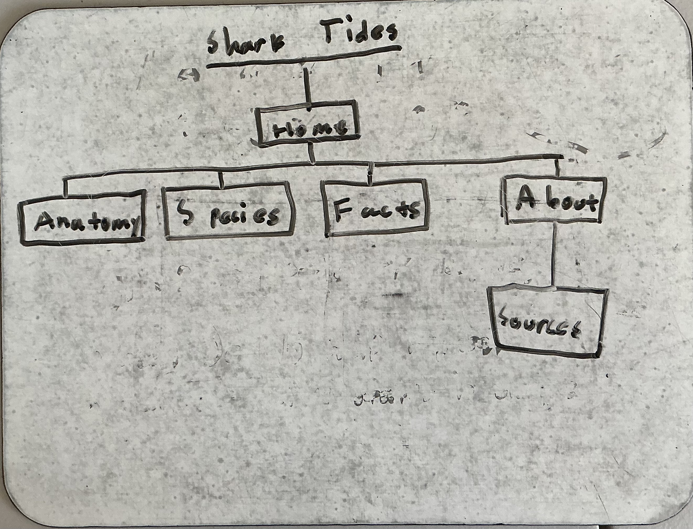
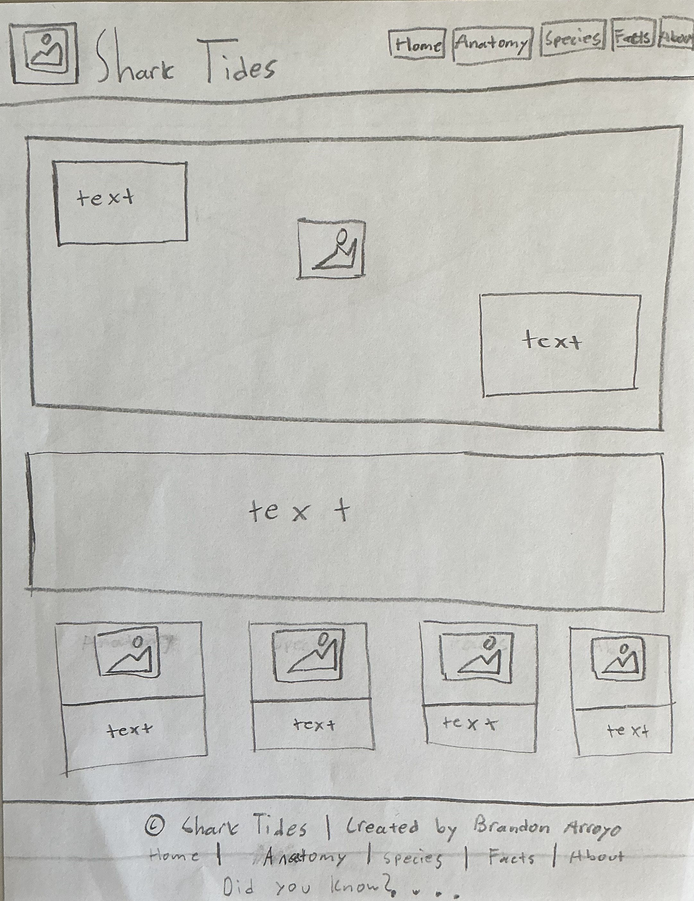
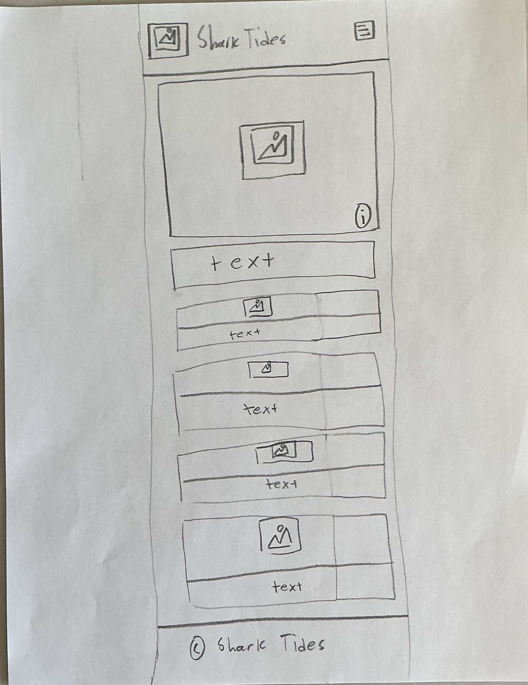

Site Name: Shark Tides
I chose the name "Shark Tides" as the name for my website because it it short and memorable. Just two words allows the user to easily remember this website and find or return to it. In addition, the fact that it has "Shark" in the title shows what the website is about at first glance. The word "Tides" also shows that that is where sharks inhabit and that sharks aren't static creatures, but rather have major impacts on their enviornments. I just feel that this a short yet cool title that really encapsulates what my website is about and shares it in just two words.
Site Purpose
This site provides a hub of beginner information for people who are interesting in learning abouts sharks. It has some cool images, fun facts, and some references to other websites that offer further, more advanced information.
Scenarios
- What exactly is a shark?
- How is a shark different from other fish?
- What are some common types of sharks?
- What are some general, interesting facts about sharks?
Since my website, Shark Tides, is a general educational website, the target is mainly students, generally curious readers, and people interested in marine life. There is no specific age or group that this website is targeting. Rather, it targets people who are curious or interested in learning about sharks and marine life.
Color Schema
- Primary
#0B1C2D - Secondary
#1F6AE1 - Accent 1
#4FD1C5 - Background
#F5F7FA - Text
#1F2933
Typography
For my website, Shark Tides, I will be exclusively using the font "Inter" for all my content. I really liked this font because I felt that it adds to my wesbite's smooth, cool, and fresh look and feel. While Inter will be used for all content, the font weight will be what changes. The h1 will be 700, h2 and h3 will be 600, body text will be 400, and the nav links will be 500. This works because the font is designed for screens and is very professional.
Wireframes


